Implementasi Registrasi, Login, Password Hashing, Session Management, Role Management, dan AuthFilter
Pengembang: Maleka Ghaniya (NRP: 5025241189) | Kelas Pemrograman Berbasis Kerangka Kerja (PBKK)
🔗 Repositori GitHub Tugas 9 📂 Source Code CodeIgniter 4Berdasarkan dokumen roadmap implementasi resmi dari pengampu mata kuliah, pengembangan modul autentikasi ShopEase dibagi ke dalam 7 langkah terstruktur:
| Tahap | Aktivitas / Materi | Output yang Dihasilkan |
|---|---|---|
| 1 | Membuat database db_shopease_auth dan tabel users; menetapkan tipe data, ENUM role, dan timestamp. |
Database & Skema Tabel users |
| 2 | Konfigurasi koneksi MySQL pada file .env (hostname, database, username, port 3307). |
Koneksi Database Aktif & Terverifikasi |
| 3 | Membuat UserModel.php mewarisi CodeIgniter\Model dengan properti $allowedFields dan $useTimestamps. |
File app/Models/UserModel.php |
| 4 | Membuat AuthController.php dengan method register(), store(), login(), authenticate(), dan logout(). |
File app/Controllers/AuthController.php |
| 5 | Mengatur routing HTTP GET dan POST untuk alur registrasi, login, logout, dan dashboard role. | File app/Config/Routes.php |
| 6 | Membangun view antarmuka login.php dan register.php menggunakan Bootstrap 5 dan CSRF token. |
File View di app/Views/auth/ |
| 7 | Membangun AuthFilter.php, mendaftarkan alias filter, memvalidasi role, dan menguji skenario keamanan. |
Proteksi Akses URL Berbasis Role |
Tabel users dirancang untuk menyimpan kredensial akun, data profil, dan wewenang (role). Password disimpan dalam bentuk hash 255 karakter dan tidak pernah disimpan dalam bentuk plain text.
CREATE DATABASE IF NOT EXISTS `db_shopease_auth` DEFAULT CHARACTER SET utf8mb4;
USE `db_shopease_auth`;
CREATE TABLE `users` (
`id_user` INT AUTO_INCREMENT PRIMARY KEY,
`name` VARCHAR(100) NOT NULL,
`email` VARCHAR(100) NOT NULL UNIQUE,
`password` VARCHAR(255) NOT NULL,
`role` ENUM('customer', 'admin', 'operator') NOT NULL DEFAULT 'customer',
`phone` VARCHAR(20) DEFAULT NULL,
`address` TEXT DEFAULT NULL,
`created_at` DATETIME NULL,
`updated_at` DATETIME NULL
) ENGINE=InnoDB DEFAULT CHARSET=utf8mb4;Ketentuan Otorisasi: Role bawaan registrasi adalah customer. Formulir registrasi publik sengaja tidak menyediakan pilihan role admin maupun operator. Akun berhak istimewa (Admin dan Operator) hanya diberikan melalui manajemen basis data langsung oleh administrator sistem.
File environment .env digunakan untuk memisahkan konfigurasi sensitif dari kode sumber, mendukung lingkungan development lokal dengan port MySQL 3307:
CI_ENVIRONMENT = development
app.baseURL = 'http://localhost:8080/'
app.defaultLocale = 'id'
app.appTimezone = 'Asia/Jakarta'
database.default.hostname = 127.0.0.1
database.default.database = db_shopease_auth
database.default.username = root
database.default.password =
database.default.DBDriver = MySQLi
database.default.port = 3307
security.csrfProtection = 'cookie'
security.tokenName = 'csrf_test_name'
security.regenerate = trueModel dalam CodeIgniter 4 bertindak sebagai lapisan abstraksi data yang menghubungkan aplikasi dengan database menggunakan Query Builder dan Active Record bawaan framework:
<?php
namespace App\Models;
use CodeIgniter\Model;
class UserModel extends Model
{
protected $table = 'users';
protected $primaryKey = 'id_user';
protected $useAutoIncrement = true;
protected $returnType = 'array';
protected $allowedFields = [
'name',
'email',
'password',
'role',
'phone',
'address'
];
protected $useTimestamps = true;
protected $dateFormat = 'datetime';
protected $createdField = 'created_at';
protected $updatedField = 'updated_at';
public function findByEmail(string $email)
{
return $this->where('email', strtolower(trim($email)))->first();
}
}Poin Kunci UserModel:
$table = 'users': Menentukan tabel acuan di database.$primaryKey = 'id_user': Menentukan kunci utama sesuai rancangan HOL.$allowedFields: Mencegah serangan Mass Assignment Vulnerability dengan hanya mengizinkan kolom terdaftar untuk di-insert atau di-update.$useTimestamps = true: Mengisi otomatis kolom created_at dan updated_at saat data dimanipulasi.Controller menangani alur logika permintaan HTTP, validasi input pengguna, hashing keamanan, serta siklus hidup sesi (session management):
<?php
namespace App\Controllers;
use App\Models\UserModel;
class AuthController extends BaseController
{
protected $userModel;
public function __construct()
{
$this->userModel = new UserModel();
}
public function register()
{
return view('auth/register', ['title' => 'Registrasi Akun - ShopEase']);
}
public function store()
{
$rules = [
'name' => 'required|min_length[3]|max_length[100]',
'email' => 'required|valid_email|is_unique[users.email]',
'password' => 'required|min_length[8]',
'password_confirm' => 'required|matches[password]'
];
if (!$this->validate($rules)) {
return view('auth/register', [
'validation' => $this->validator
]);
}
$this->userModel->insert([
'name' => trim($this->request->getPost('name')),
'email' => strtolower(trim($this->request->getPost('email'))),
'password' => password_hash($this->request->getPost('password'), PASSWORD_DEFAULT),
'role' => 'customer',
'phone' => $this->request->getPost('phone'),
'address' => $this->request->getPost('address')
]);
return redirect()->to('/login')
->with('success', 'Registrasi berhasil. Silakan login.');
}
public function authenticate()
{
$email = strtolower(trim($this->request->getPost('email')));
$password = $this->request->getPost('password');
$user = $this->userModel->where('email', $email)->first();
if (!$user || !password_verify($password, $user['password'])) {
return redirect()->back()
->withInput()
->with('error', 'Email atau password salah.');
}
// Regenerasi ID Session untuk mencegah Session Fixation Attack
session()->regenerate(true);
session()->set([
'isLoggedIn' => true,
'user_id' => $user['id_user'],
'name' => $user['name'],
'email' => $user['email'],
'role' => $user['role']
]);
// Pengalihan Berdasarkan Role
switch ($user['role']) {
case 'admin':
return redirect()->to('/admin');
case 'operator':
return redirect()->to('/operator');
default:
return redirect()->to('/customer');
}
}
public function logout()
{
session()->destroy();
return redirect()->to('/login')
->with('success', 'Anda berhasil logout.');
}
}password_hash(..., PASSWORD_DEFAULT) yang mengimplementasikan algoritma Bcrypt kuat dengan salt otomatis.password_verify() tahan terhadap serangan timing attack.session()->regenerate(true) langsung mengganti Session ID setelah otentikasi berhasil untuk menggugurkan sesi lama.Routing diatur dengan memisahkan rute publik, rute proses autentikasi, serta rute yang diproteksi oleh Filter berbasis role:
// 1. Rute Publik
$routes->get('/', 'HomeController::index');
$routes->get('products', 'ProductController::index');
// 2. Rute Autentikasi
$routes->get('register', 'AuthController::register');
$routes->post('register', 'AuthController::store');
$routes->get('login', 'AuthController::login');
$routes->post('login', 'AuthController::authenticate');
$routes->get('logout', 'AuthController::logout');
$routes->post('logout', 'AuthController::logout');
// 3. Rute Khusus Customer (Filter: auth:customer)
$routes->group('customer', ['filter' => 'auth:customer'], static function ($routes) {
$routes->get('/', 'Customer\DashboardController::index');
});
// 4. Rute Khusus Operator (Filter: auth:operator)
$routes->group('operator', ['filter' => 'auth:operator'], static function ($routes) {
$routes->get('/', 'Operator\DashboardController::index');
});
// 5. Rute Khusus Admin (Filter: auth:admin)
$routes->group('admin', ['filter' => 'auth:admin'], static function ($routes) {
$routes->get('/', 'Admin\DashboardController::index');
});Antarmuka dibangun dengan Bootstrap 5 yang bersih dan responsif, dilengkapi alert flash data, penampil pesan validasi form, serta token CSRF:
<?= csrf_field() ?> di dalam setiap form HTML untuk menangkal serangan Cross-Site Request Forgery.<?= $validation->listErrors() ?> sehingga calon pengguna mengetahui secara spesifik input mana yang belum memenuhi syarat.Filter bertindak sebagai Middleware yang memeriksa setiap request sebelum dieksekusi oleh Controller tujuan:
<?php
namespace App\Filters;
use CodeIgniter\Filters\FilterInterface;
use CodeIgniter\HTTP\RequestInterface;
use CodeIgniter\HTTP\ResponseInterface;
class AuthFilter implements FilterInterface
{
public function before(RequestInterface $request, $arguments = null)
{
$session = session();
// 1. Verifikasi Status Login Pengguna
if (!$session->get('isLoggedIn')) {
$session->setFlashdata('error', 'Silakan login terlebih dahulu.');
return redirect()->to('/login');
}
// 2. Verifikasi Kesesuaian Role
if (!empty($arguments) && !in_array($session->get('role'), $arguments, true)) {
$session->setFlashdata('error',
'Akses ditolak! Anda login sebagai [' . esc($session->get('role')) . '], tidak berhak mengakses halaman tersebut.');
$role = $session->get('role');
if ($role === 'admin') {
return redirect()->to('/admin');
} elseif ($role === 'operator') {
return redirect()->to('/operator');
} else {
return redirect()->to('/customer');
}
}
}
public function after(RequestInterface $request, ResponseInterface $response, $arguments = null)
{
// Tidak diperlukan proses lanjutan
}
}Seluruh skenario pengujian yang tercantum pada dokumen Hands-On Lab telah diuji secara komprehensif:
| No. | Skenario Pengujian | Input / Aksi | Hasil yang Diharapkan | Status Uji |
|---|---|---|---|---|
| 1 | Registrasi Customer Baru | Nama, email baru, password 8+ karakter cocok | Data tersimpan di MySQL, redirect ke Login dengan notifikasi sukses | ✔ BERHASIL |
| 2 | Registrasi Email Duplikat | Email yang sudah terdaftar di tabel users | Validasi menolak dengan pesan "Email sudah terdaftar" | ✔ BERHASIL |
| 3 | Password Kurang dari 8 Karakter | Password 4 karakter | Validasi menolak dengan pesan "Password minimal 8 karakter" | ✔ BERHASIL |
| 4 | Konfirmasi Password Berbeda | Password dan konfirmasi tidak identik | Validasi menolak dengan pesan "Konfirmasi password tidak sama" | ✔ BERHASIL |
| 5 | Login Data Benar (Role Customer) | Email valid dan password benar | Session dibuat, pengguna dialihkan ke /customer |
✔ BERHASIL |
| 6 | Login Password Salah | Email benar namun password salah | Login ditolak dengan flash message "Email atau password salah" | ✔ BERHASIL |
| 7 | Login Role Admin & Operator | Kredensial akun admin & operator | Dialihkan tepat ke /admin atau /operator |
✔ BERHASIL |
| 8 | Akses Halaman Terlindungi Tanpa Login | Mengunjungi URL /admin langsung |
AuthFilter memblokir dan mengarahkan ke /login |
✔ BERHASIL |
| 9 | Akses Role Tidak Sesuai (Role Mismatch) | Customer mencoba membuka URL /admin |
AuthFilter menolak dan mengarahkan kembali ke /customer |
✔ BERHASIL |
Berikut adalah 12 tangkapan layar live dari pengujian sistem autentikasi dan otorisasi ShopEase:
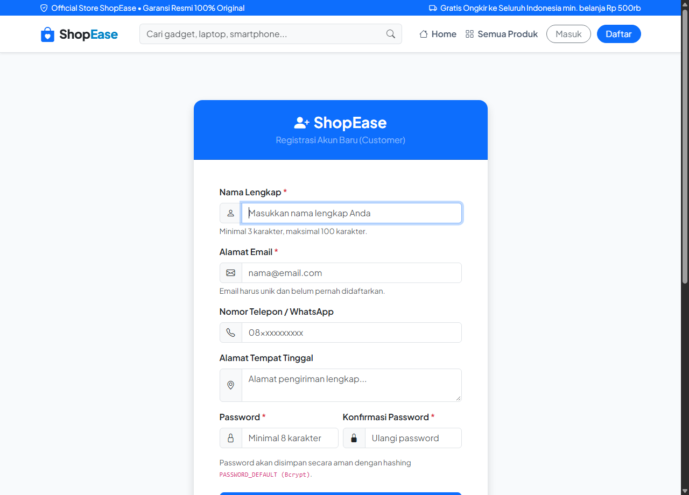
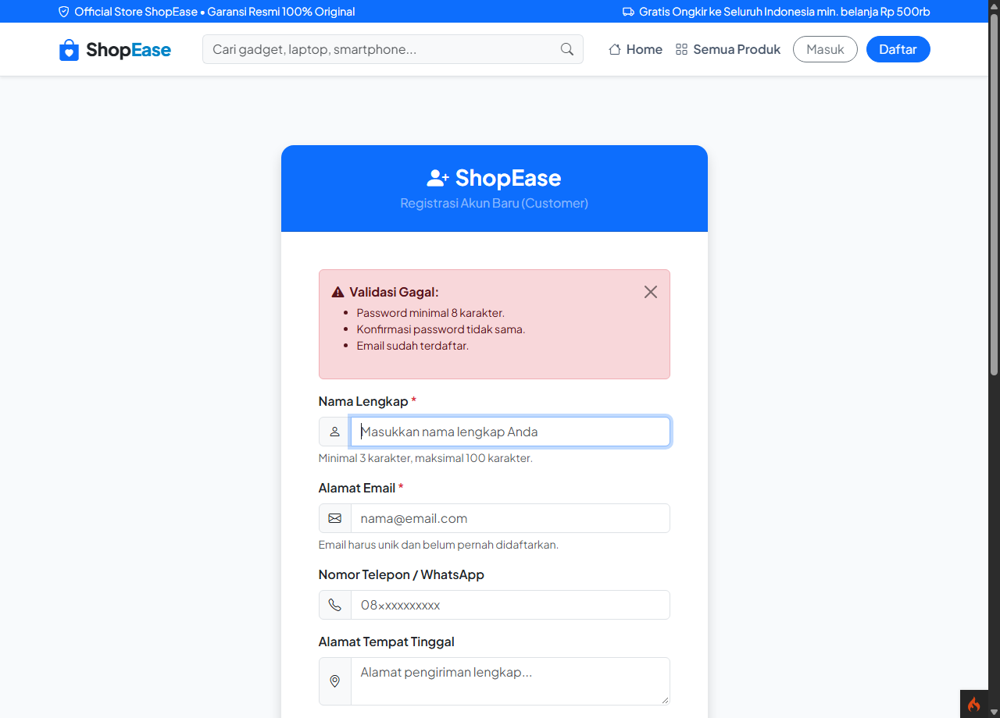
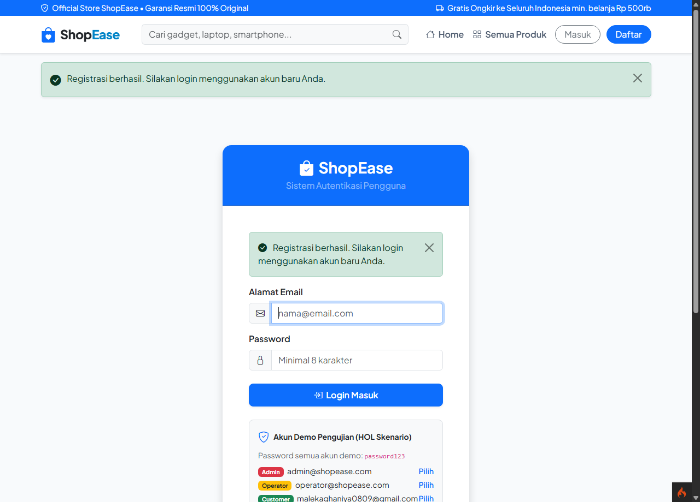
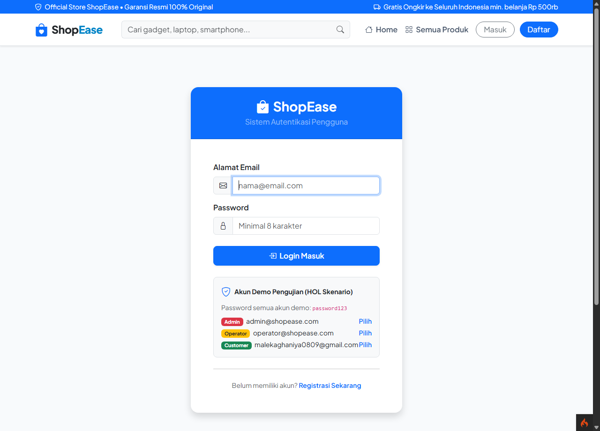
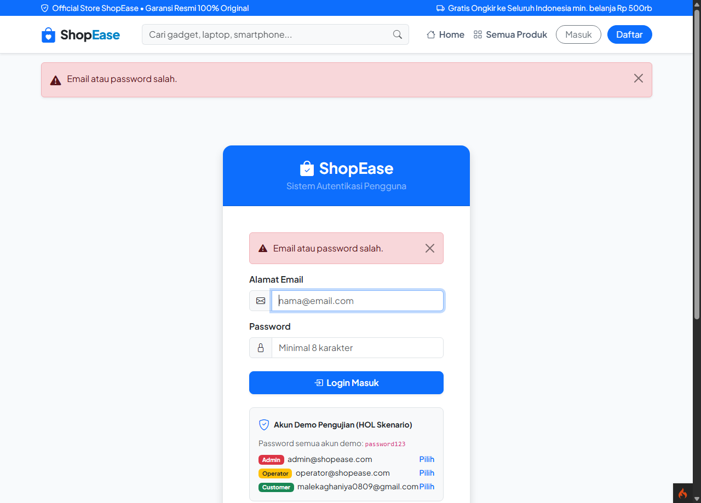
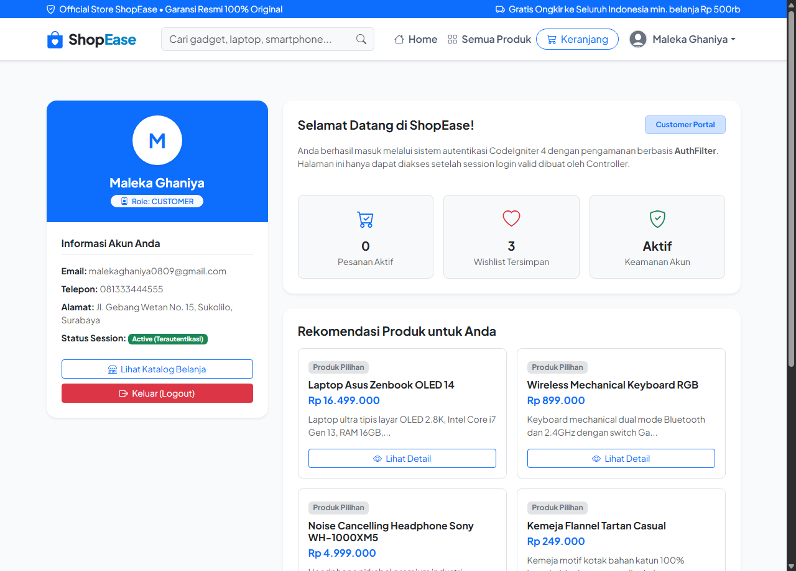
auth:customer Menampilkan Profil dan Rekomendasi Produk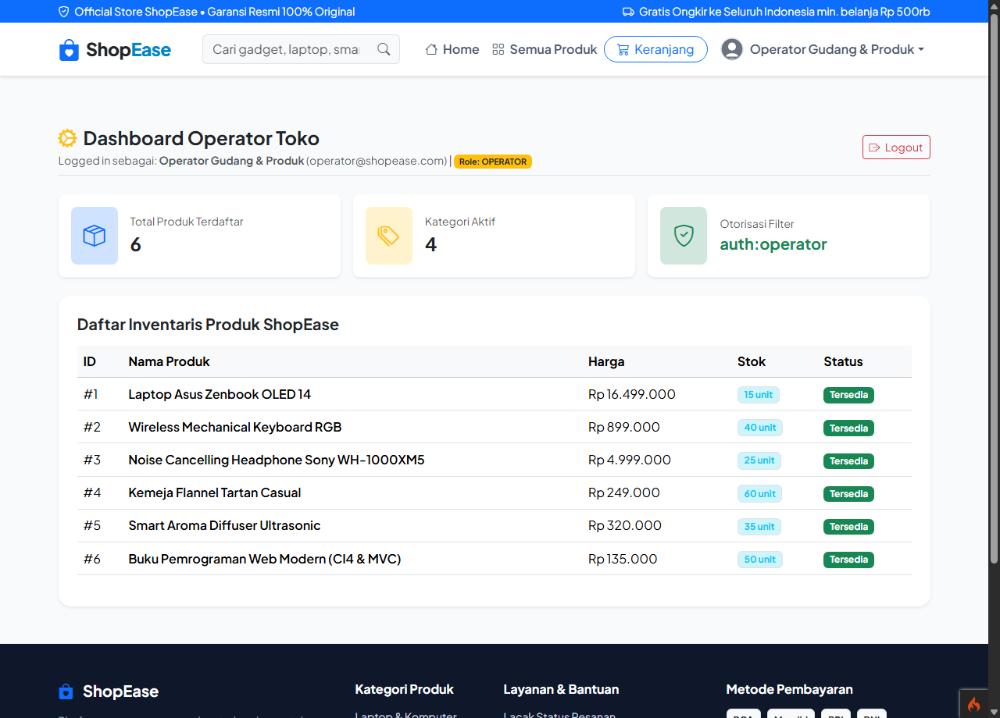
auth:operator Menampilkan Inventaris Produk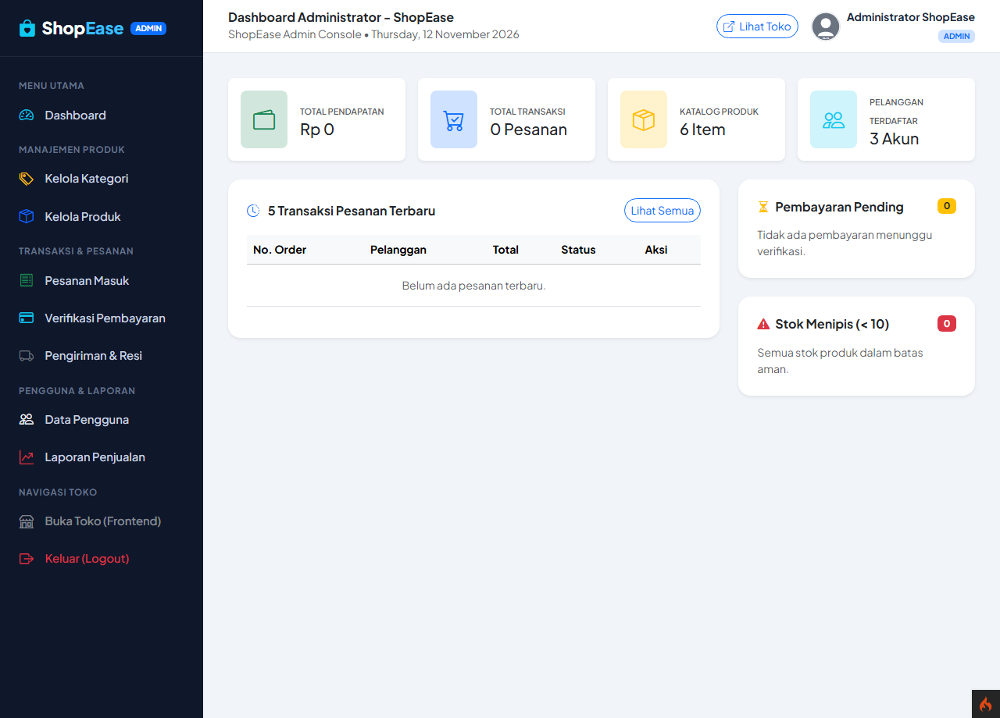
auth:admin Menampilkan Statistik Pendapatan dan Toko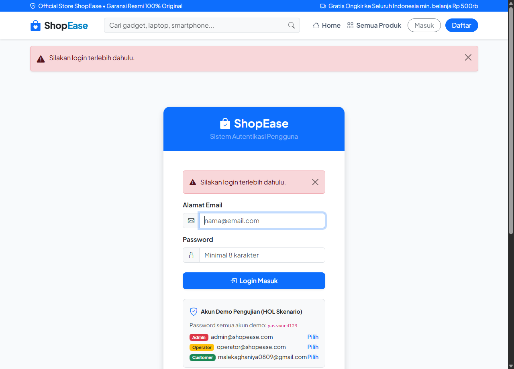
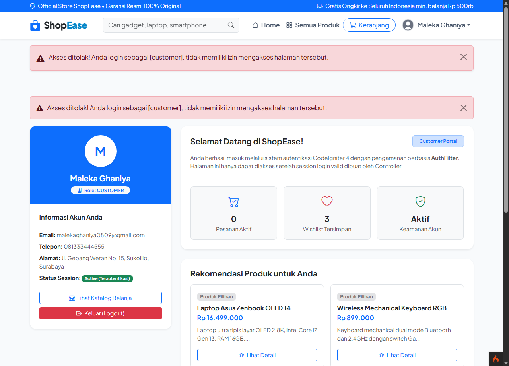
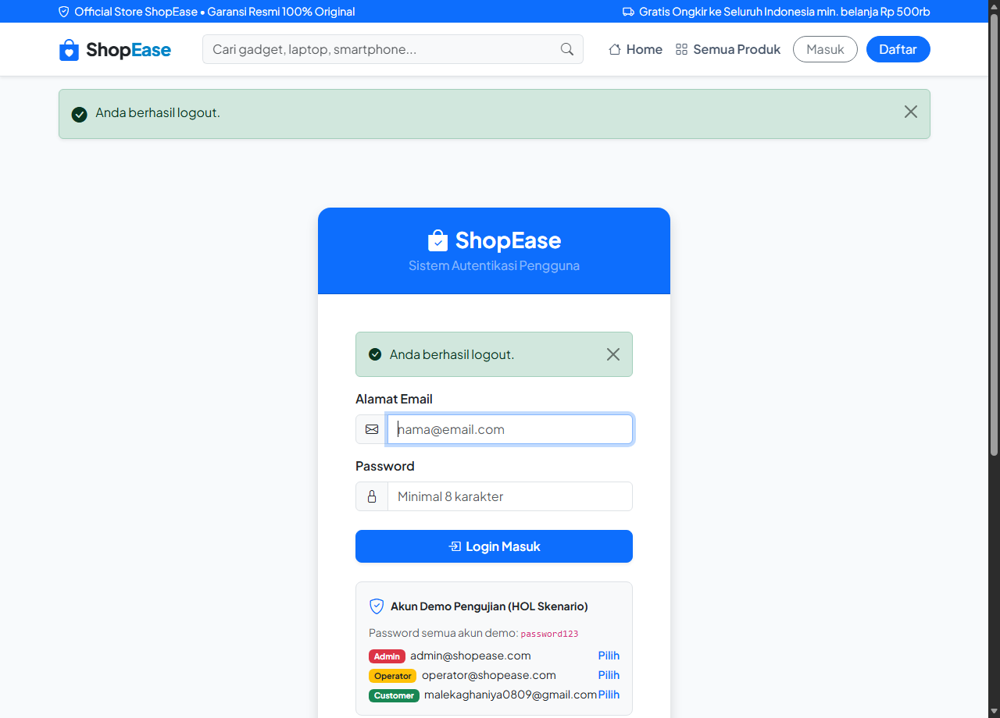
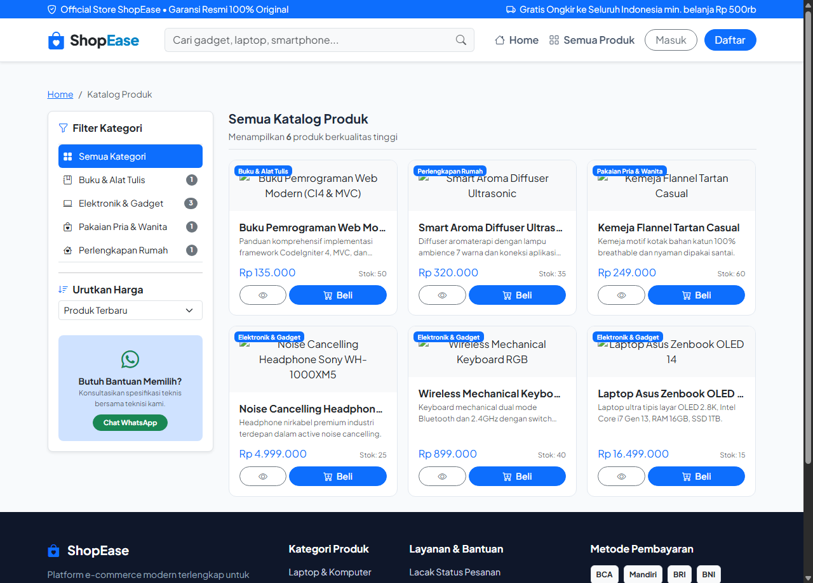
Modul Authentication & Authorization System pada aplikasi ShopEase telah selesai dibangun dan memenuhi seluruh kriteria pada modul pembelajaran PBKK:
UserModel.php telah berhasil menangani operasi CRUD dan relasi data pengguna pada database MySQL.AuthController.php menerapkan validasi ketat, password hashing Bcrypt yang aman, dan regenerasi session.AuthFilter.php sukses mengisolasi wewenang antar role (Customer, Operator, Admin) dan melindungi endpoint sensitif dari akses tanpa izin.